Tutorial 2: Buckling Analysis — Columns, Plates, and a Wing Structure
Overview
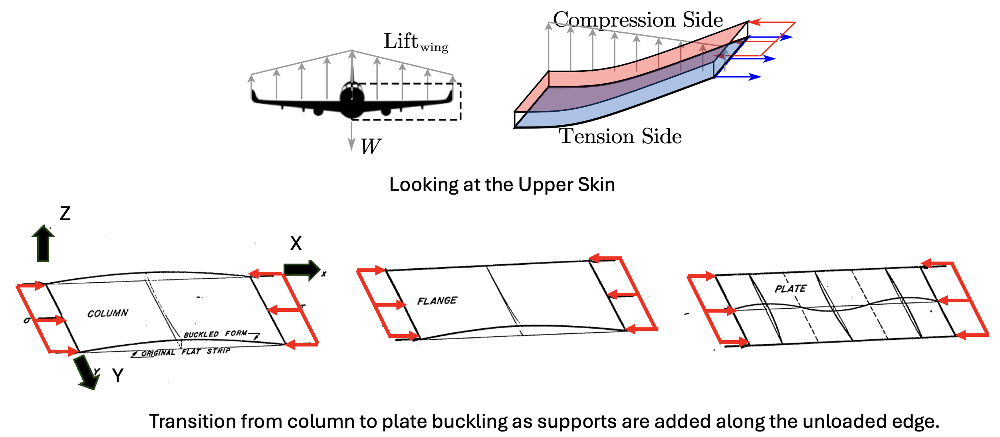
Original ImageThis tutorial introduces structural buckling — the sudden loss of load-carrying shape that governs the design of thin, compressed structures like wing skins and spar caps. Unlike strength failures, buckling is a stiffness-driven instability: a structure can buckle well below its material yield stress, which makes it the critical design constraint in lightweight aerospace structures.
We will go through three topics:
- Column buckling — Euler's critical load \(P_{cr}\) for a spar or stringer under axial compression
- Plate buckling — critical stress \(\sigma_{cr}\) for a flat skin panel, and how aspect ratio and boundary conditions set the buckling coefficient \(k\)
- Wing application — eigenvalue buckling analysis of a full wing model in Abaqus, showing which component buckles first
Finally, we compare hand calculations against finite element results from Abaqus and discuss what the eigenvalue means physically.
Part 1: Column Buckling — The Euler Load
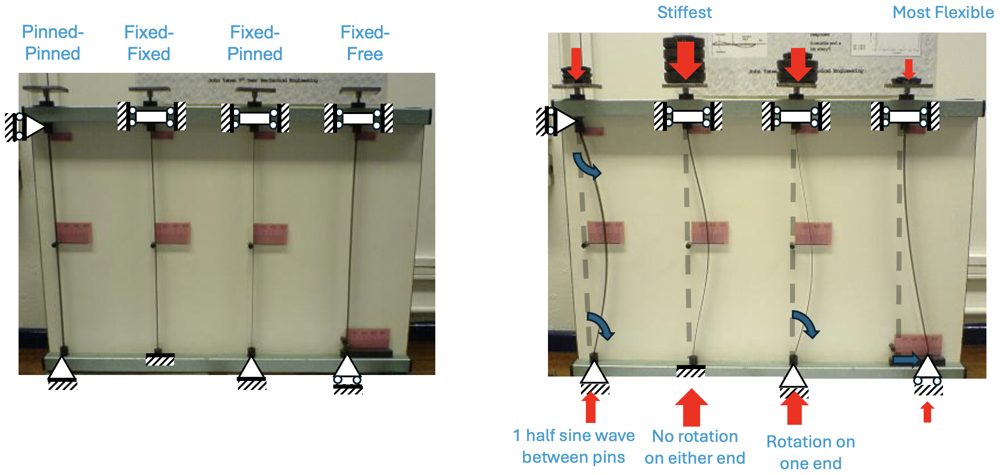
Original ImageA column is a structural member loaded in pure axial compression. When the load reaches a critical value \(P_{cr}\), the column ceases to be in stable equilibrium and deflects laterally — this is Euler buckling.
While a buckled column might technically still be "standing" and supporting the load that caused it to buckle, it has lost its structural stability, any attempt to increase the load causes the lateral deflection to increase exponentially, leading to rapid collapse.
1.1 Governing Equation
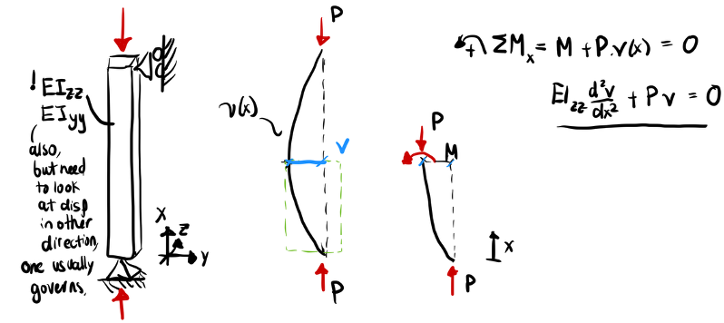
Consider a slender column of length \(L\), flexural stiffness \(EI\), with a compressive load \(P\) applied at each end. The governing differential equation for the buckled shape \(v(x)\) is derived from moment equilibrium of a deflected segment:
This is a second-order eigenvalue problem. The general solution is:
Applying boundary conditions eliminates the constants and yields a non-trivial solution only at discrete critical loads.
1.2 Critical Load and Effective Length
For a pin-pin column, both ends are free to rotate but restrained from translating: \(v(0) = 0\), \(v(L) = 0\), \(v''(0) = 0\), \(v''(L) = 0\). Applying these to the general solution forces \(B = 0\), (since \(cos(0)=0\)) leaving:
For a non-trivial solution (\(A \neq 0\)), the sine term must equal zero at \(x = L\). Since \(\sin(\theta) = 0\) at \(\theta = n\pi\) for any integer \(n\), this requires:
Solving for \(P\) gives a family of critical loads, one for each integer \(n\). We take \(n = 1\) because the structure buckles at the lowest load it reaches:
This corresponds to a single half-sine wave along the column length.
Real boundary conditions are captured by the effective length factor \(K\) which modifies the physical length to produce an equivalent pin-pin column:
| End Conditions | Boundary Conditions | Characteristic Equation | First Root | \(K = \pi\,/\,\text{root}\) |
|---|---|---|---|---|
| Pin – Pin | \(v(0)=0,\ v''(0)=0,\ v(L)=0,\ v''(L)=0\) | \(\sin\!\left(\sqrt{\tfrac{P}{EI}}L\right)=0\) | \(\pi\) | \(1.0\) |
| Fixed – Free | \(v(0)=0,\ v'(0)=0,\ v''(L)=0,\ v'''(L)=0\) | \(\cos\!\left(\sqrt{\tfrac{P}{EI}}L\right)=0\) | \(\pi/2\) | \(2.0\) |
| Fixed – Fixed | \(v(0)=0,\ v'(0)=0,\ v(L)=0,\ v'(L)=0\) | \(\sin\!\left(\sqrt{\tfrac{P}{EI}}L\right)=0\) | \(2\pi\) | \(0.5\) |
| Fixed – Pin | \(v(0)=0,\ v'(0)=0,\ v(L)=0,\ v''(L)=0\) | \(\tan\!\left(\sqrt{\tfrac{P}{EI}}L\right)=\sqrt{\tfrac{P}{EI}}L\) | \(4.493\) | \(0.699\) |
! Note: Rarely are boundary conditions perfect, imperfection, friction, and other factors may break the idealized BC in these derivations. Usually need real test results to calculate the buckling load \(P_{cr}\)!
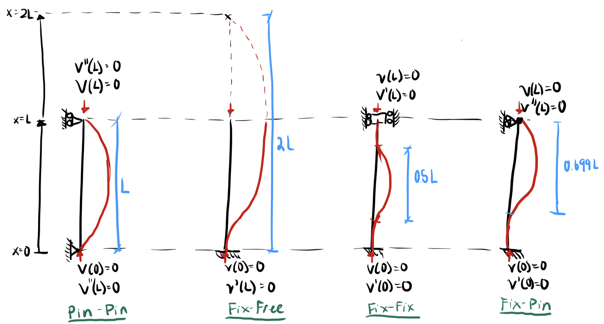
Wing context: For a spar cap between two ribs, two bounding assumptions are useful:
Pin-pin (\(K = 1.0\)): ribs provide no rotational restraint. This underestimates \(P_{cr}\) — the safe, conservative choice for preliminary design.
Fixed-fixed (\(K = 0.5\)): ribs are assumed infinitely stiff. This overestimates \(P_{cr}\) — if the real rib is flexible, the structure buckles below your prediction.
Pin-pin is the standard starting point. Fixed-fixed is only appropriate if the rib attachment stiffness is explicitly verified.
1.3 Slenderness Ratio and Validity
Euler's formula is only valid for long, slender columns where buckling occurs elastically before yielding. The slenderness ratio is:
where \(r\) is the radius of gyration of the cross-section. A high \(KL/r\) means Euler applies. For shorter columns (low \(KL/r\)), inelastic buckling governs and the Johnson parabola is used:
The transition slenderness ratio between Euler and Johnson regimes is:

The Johnson parabola assumes a well-defined yield stress — a reasonable model for steel but less appropriate for aerospace alloys like aluminum 7075-T6, whose stress-strain curve is smoothly nonlinear. In practice, aerospace column design replaces the piecewise Euler/Johnson approach with a tangent modulus* method, where \(E_T\) degrades continuously with stress according to the material's nonlinear response. Allowable column stresses are then read from material-specific curves published in MMPDS (formerly MIL-HDBK-5), anchored to statistical test data rather than a closed-form formula. Additonal Source
1.4 Hand Calculation — Plate Strip as a Column
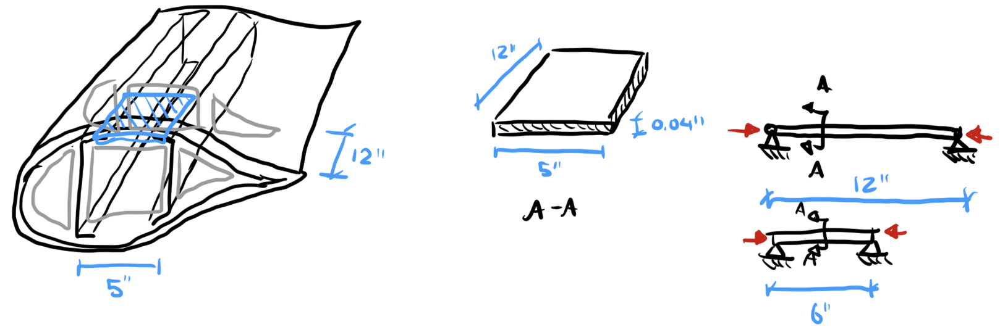
A 5 in × 0.04 in aluminum strip (\(E = 10 \times 10^6\) psi) is treated as a pin-pin column, ignoring any support along the long edges. This is a useful lower bound, buckling could occur at this level, but is usually higher since we are ignoring boundaries along the 'column'.
For \(L = 12\) in:
For \(L = 6\) in:
Halving the rib spacing quadruples \(P_{cr}\) — a direct consequence of the \(1/L^2\) dependence.
The radius of gyration \(r = \sqrt{I/A} = \sqrt{2.67 \times 10^{-5}/0.2} = 0.01155\) in. For \(K = 1.0\):
The transition slenderness for aluminum (\(E = 10 \times 10^6\) psi, \(\sigma_y = 73{,}000\) psi):
Both cases are well above 164 — deep in the Euler regime — so the low \(\sigma_{cr}\) values are expected. At \(KL/r \approx 1000\), the critical stress is a tiny fraction of yield.
If we take a look at using foam on the panel, the new sandwich panel moment of inertia treats only the aluminum skins as load-bearing (foam stiffness is negligible). Each skin centroid sits at \(y=t_{core}/2+t_{skin}/2\) from the neutral axis, so by the parallel axis theorem:
For two 0.02 in aluminum skins with foam core, \(b = 5\) in, \(L = 12\) in:
| Core | \(t_{core}\) (in) | \(I\) (in⁴) | \(P_{cr}\) (lb) |
|---|---|---|---|
| None | — | \(2.67 \times 10^{-5}\) | 18.3 |
| 2 mm | 0.0787 | \(4.94 \times 10^{-4}\) | 338.7 |
| 3 mm | 0.1181 | \(9.61 \times 10^{-4}\) | 658.5 |
| 4 mm | 0.1575 | \(1.58 \times 10^{-3}\) | 1084.3 |
Adding a 3 mm foam core increases \(P_{cr}\) by a factor of 36 with negligible added weight — the core separates the skins from the neutral axis, dramatically increasing \(I\) without adding structural mass.
In Part 2, we apply plate theory to the same geometry. The supported long edges add significant stiffness and \(\sigma_{cr}\) rises substantially.
Part 2: Plate Buckling — Skin Panels Under Compression
A plate is a flat structural member whose thickness is small compared to its in-plane dimensions. When a plate is loaded in in-plane compression, it buckles into a sinusoidal wave pattern — but unlike a column, it does not lose all load-carrying capacity at \(\sigma_{cr}\). Plates exhibit significant post-buckling strength, which is why aircraft skins are routinely designed to operate in the post-buckled state.
2.1 Governing Equation
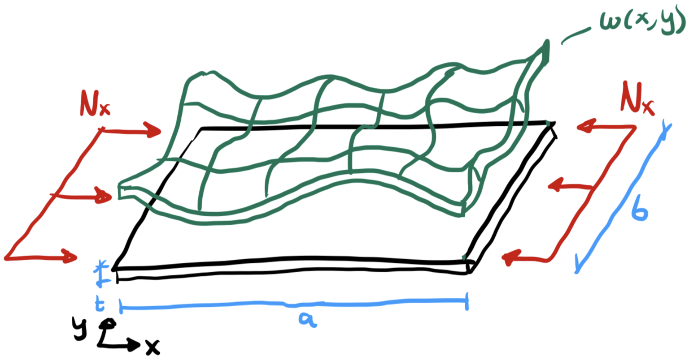
The governing equation for buckling of a thin isotropic plate under uniform uniaxial compression \(N_x\) (force per unit width, in lb/in) is:
where \(w(x,y)\) is the out-of-plane deflection and \(D\) is the plate bending stiffness:
2.2 Critical Stress

For a rectangular plate of width \(b\) (loaded edge), length \(a\) (unloaded edge), simply supported on all four edges, the deflection takes the form:
where \(m\) is the number of half-waves along the loading direction and \(n\) is the number of half-waves transverse to loading. Substituting into the governing equation yields the critical stress:
The buckling coefficient is derived by substituting the assumed mode shape into the governing equation, yielding:
Substituting \(\alpha = a/b\) and setting \(n = 1\) (the lowest transverse mode always governs):
2.3 Buckling Coefficient \(k\) and Mode Number \(m\)
For a given aspect ratio \(\alpha\), the critical mode is the integer \(m\) that minimizes \(k\). As the plate gets longer relative to its width, more half-waves fit along the length and \(k\) oscillates around the long-plate limit of \(k = 4.0\).
The transition between \(m\) and \(m+1\) half-waves occurs when both give the same \(k\):
So transitions occur at \(\alpha = \sqrt{2} \approx 1.41\), \(\sqrt{6} \approx 2.45\), \(\sqrt{12} \approx 3.46\), and so on.
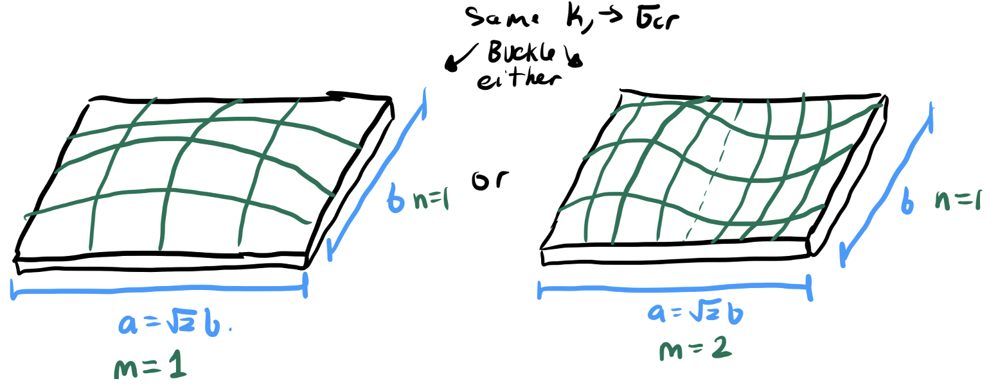
\(k\)–\(\alpha\) Table — Simply Supported, Uniaxial Compression
| \(\alpha = a/b\) | \(m=1\) | \(m=2\) | \(m=3\) | \(m=4\) | \(m=5\) | \(k_\text{min}\) | \(m_\text{min}\) |
|---|---|---|---|---|---|---|---|
| 0.50 | 6.25 | 18.06 | 38.03 | 66.02 | 102.01 | 6.25 | 1 |
| 1.00 | 4.00 | 6.25 | 11.11 | 18.06 | 27.04 | 4.00 | 1 |
| 1.41 | 4.50 | 4.50 | 6.72 | 12.50 | 21.12 | 4.50 | 1,2 |
| 2.00 | 6.25 | 4.00 | 4.69 | 6.25 | 8.41 | 4.00 | 2 |
| 2.45 | 8.16 | 4.17 | 4.17 | 5.04 | 6.41 | 4.17 | 2,3 |
| 3.00 | 11.11 | 4.69 | 4.00 | 4.34 | 5.14 | 4.00 | 3 |
| 3.46 | 14.09 | 5.33 | 4.08 | 4.08 | 4.56 | 4.08 | 3,4 |
| 4.00 | 18.06 | 6.25 | 4.34 | 4.00 | 4.20 | 4.00 | 4 |
| 4.47 | 22.36 | 7.56 | 4.84 | 4.05 | 4.05 | 4.05 | 4,5 |
Reading the table: for a long panel with \(\alpha \gg 1\), \(k \to 4.0\) and the exact mode number matters less than the plate's \(t/b\) ratio. For shorter panels (stiffener bays), \(k\) can drop well below 4.0 and the mode selection matters for accuracy.
2.4 Hand Calculation — Flat Plate
Same aluminum (\(E = 10 \times 10^6\) psi, \(\nu = 0.33\)), \(t = 0.04\) in. The aspect ratio \(\alpha = a/b = 12/5 = 2.4\) falls between table entries (\(\alpha = 2.00\) and \(\alpha = 2.45\)). Computing \(k\) directly from \(k = (m/\alpha + \alpha/m)^2\) with \(m = 2\) governing:
The plate bending stiffness is unchanged from before (depends only on \(E\), \(t\), \(\nu\)):
Critical stress and load quantities:
Compared to the wide-column result of 18.3 lb for the same 12 in length, the simply-supported long edges raise \(P_{cr}\) by a factor of 27 — the plate boundary conditions are doing significant work.
2.5 Hand Calculation — Sandwich Panel
Same plate geometry now (\(b = 5\) in, \(a = 12\) in, \(\alpha = 2.4\), \(k = 4.13\)), with two 0.02 in aluminum skins separated by a 3 mm (0.1181 in) foam core. The core carries no in-plane load.
The effective moment of inertia per unit width is unchanged — it depends only on the through-thickness construction:
The new \(k\) and \(b\) apply:
Face sheet stress at the buckling load:
This exceeds the aluminum yield stress (~73,000 psi). Unlike the \(b = 6\) case — which sat just below yield — the narrower panel is now firmly strength-critical: the face sheets will yield before global plate buckling occurs. The actual failure load is bounded by:
So the panel fails at roughly 14,600 lb (yield) rather than 17,590 lb (buckling). The sandwich-to-plate stiffness ratio of ~36 is preserved (since \(D\) alone changes between the two), but at this width the design is no longer governed by stability.
Part 3: Abaqus — Eigenvalue Buckling Analysis
Abaqus computes buckling loads via a linear eigenvalue extraction (the *BUCKLE step). It solves:
where \(K_0\) is the elastic stiffness matrix, \(K_\Delta\) is the geometric (stress) stiffness matrix under a unit reference load, \(\lambda_i\) is the load multiplier (eigenvalue), and \(\phi_i\) is the buckled mode shape (eigenvector). The physical critical load is:
where \(P_\text{ref}\) is whatever reference load you applied. Abaqus always reports eigenvalues relative to the reference load — so the choice of \(P_\text{ref}\) matters for interpretation.
Important limitation: the eigenvalue result is a linear prediction for a perfect structure. Real structures have geometric imperfections, residual stresses, and nonlinear behavior. The eigenvalue gives an upper bound; actual buckling loads are typically 10–30% lower. A nonlinear
*STATIC, RIKSanalysis is needed to capture post-buckling behavior.
3.1 Column Model
To create the models as idealistically as the derivations, we need to look closely at element selection and boundary conditions.
For the case of the column buckling with a wide thin cross section, use a wire part, with beam elements (B31), and a rectangular section that is 5" wide and 0.04" thick.
For the sandwiched (foam-core) column, need to switch over to shell elements to model this 'composite' section. use shell elements (S4R), with [0,0,0] layup of 0.02", core thickness, 0.02" aluminum. The main thing is the shear modulus of the foam needs to be strong enough, or else the two plates won't act together (delaminate), so I needed to set \(E_{foam}=10E6\) psi.
The constraints need to be considered carefully. For The beam, it's simple, U1=U2=U3=0 on the bottom and U2=U3=0 at the top and apply compressive load. For the shell elements, where each element has 6 DOFs, you need to couple the entire edge to a single point first - this constraint distributes the load and weighs the calculated displacement, forcing the edge to behave as a single edge on both sides. And then same BC as before, while also preventing twisting about the other planes; these are precautions to avoid local crimping of the 'column' modeled as shells.
| Notes | Abaqus Results | Hand Calc \(P_{cr}\) (lb) | Abaqus \(P_{cr}\) (lb) | Diff |
|---|---|---|---|---|
| Beam Model | 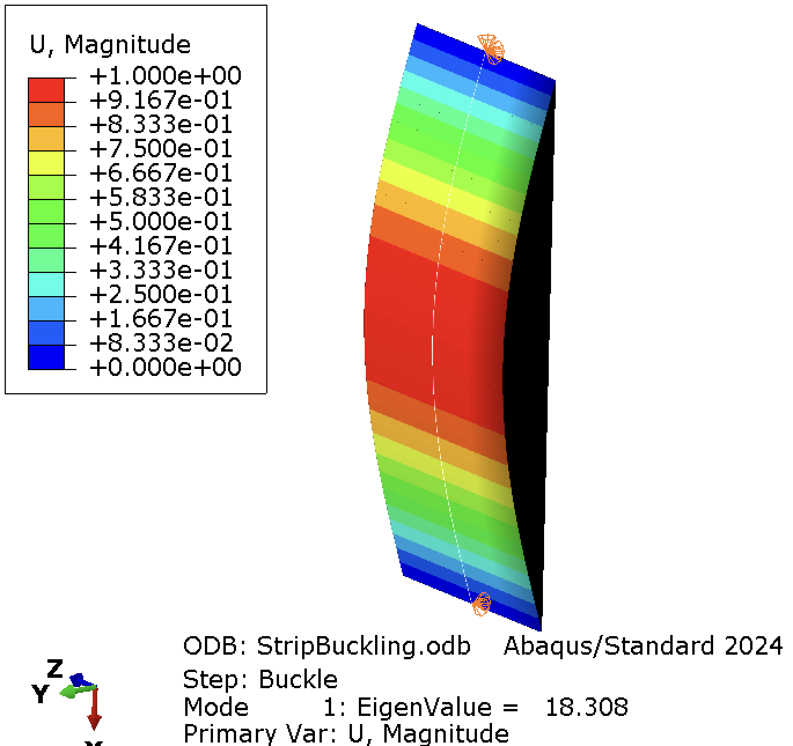 |
18.300 | 18.308 | 0.04% |
| 2mm Core | 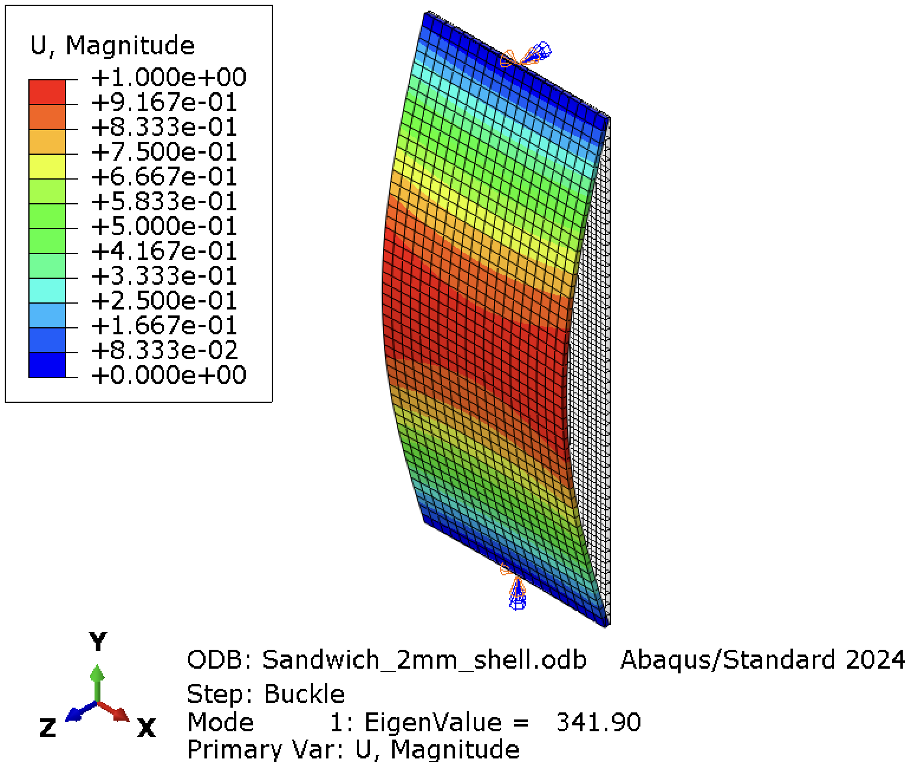 |
338.7 | 341.9 | 1.1% |
| 3mm Core | 658.5 | 664.41 | 0.9% | |
| 4mm Core | 1084.3 | 1094.0 | 0.9% |
Download Abaqus Script:
⬇️ Buckling of Column with Thin-Wide Cross Section.py
⬇️ Buckling of Column with Thin-Wide Sandwich Cross Section.py
3.2 Plate Model
The model is per the hand calcs, 0.04" thick, 5" wide and 12" long, using S4R shell elements. For boundary conditions, SSSS conditions were used in the calcs, so one side is set to be pinned U1=U2=U3=0. The loaded short edge has a RP constraint (with distributing coupling only in the U1), with a concentrated force U1=-1 lb and U2=0 (for stability). The long edges are simply supported, U3=0; the U2 is not constrained to allow the plate to expand outwards.
The eigenvalue from this analysis gives \(P_{cr}\) not \(N_x\) because I used a concentrated load on the RP! Remember, \(P_{cr}=\lambda\times F_{ref}\). If you wanted \(N_x=P_{cr}/b\) or apply a line edge load in Abaqus.
For the 2nd and 3rd (sandwich) model, you can see the effect of the Elastic modulus->Shear modulus on the strength of the composite plate. I used a 3mm core in both cases, but the modulus was set to something realistic, 3,000 psi, and also just as stiff as the skins, 10E6 psi for aluminum. When the elastic modulus is low, you can see face sheet wrinkling caused by loss of composite action. The skins are sliding relative to each other because the core can't transfer sufficient shear, so instead of the plate buckling globally as a unit, each skin ripples independently at short wavelengths. This limits the benefit of the core to a value depending on how much the core can transfer shear/ bond to the skins.
| Notes | Modes | Hand Calc \(P_{cr}\) (lb) | Abaqus \(P_{cr}\) (lb) | Diff |
|---|---|---|---|---|
| 0.04" Plate | 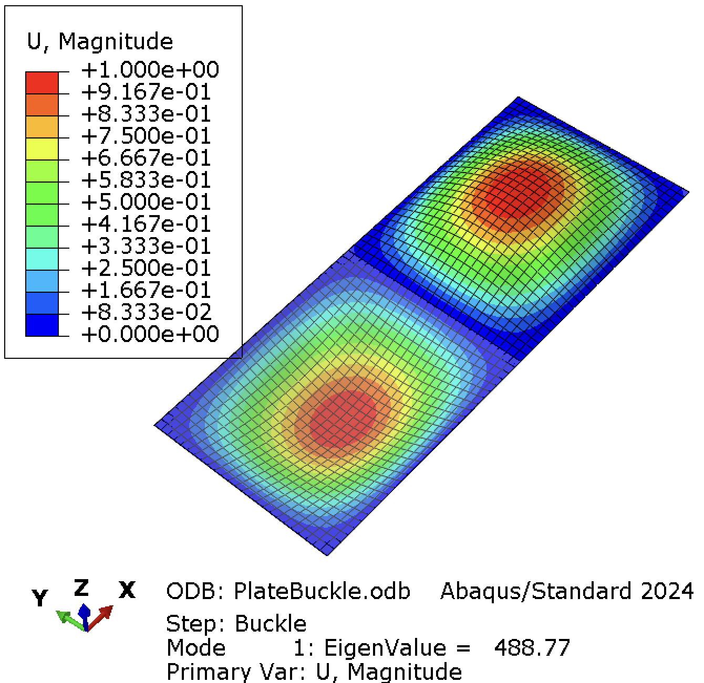 |
482.09 | 488.0 | 1.24% |
| 3 mm Core E=7250psi |
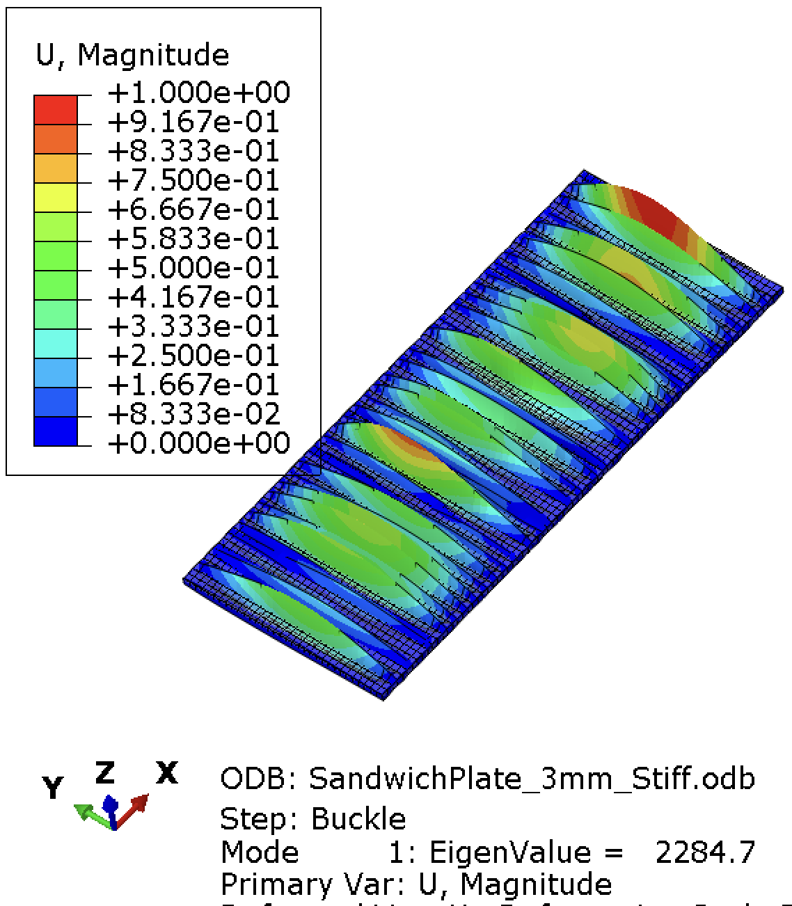 |
17,590 | 2284.7 | 670.0% |
| 3 mm Core E=10E6psi |
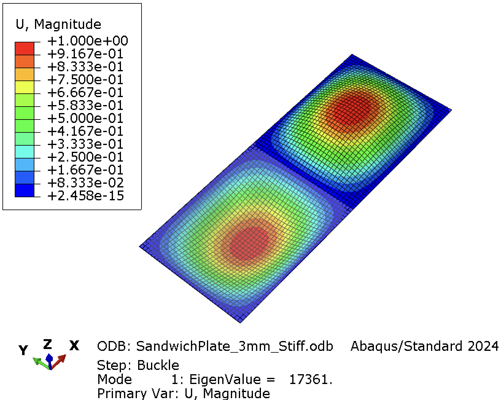 |
17,590 | 17,361 | 1.3% |
Download Abaqus Script:
⬇️ Buckling of Plate with Sandwich.py
Part 4: Wing Model — Which Component Buckles First?
The final example applies eigenvalue buckling to the full wing structure from Tutorial 1. The upper skin is under compression during positive-g cruise; the question is whether the skin panel between stringers buckles before the spar cap between ribs.
4.1 Model Setup
The model was set up as with 8 ribs, spaced 12" apart (to match the hand calcualtions above). The distances between the ribs was also adjusted so that it equalled 5", (6" and 11" from the leading edge). This gives use middle cells with dimensions of 5"x12" apart, which is odd, but I'm just trying to match hand calculations. Buckling anlaysis is set up as described above: we need to define a load in the Buckle step and set appropriate boundary conditions. This was done using a RP at the end, tie to the entire edge of the wing and we applied 1lbf in the negative x direction. Mesh size of 0.5 was first used and the 0.25 for study. This would be different from using the actual aerodynamic load case you're designing for.
 |
 |
| Mesh and Interactions | BC and Loading |
4.2 Mode Identification
A skin buckling mode will show short-wavelength ripples between stringers and ribs with no global deformation of the spar. A global column mode will show the entire wing deflecting laterally with a single half-wave along the span. Intermediate modes may show spar cap buckling between individual ribs.
Using a coarse mesh size of 0.5", the first buckling mode of 4.4kips of the spars and then at 4.5 kips, the skin at the root buckles.
| Mode 1: Spar | Mode 2: Skin |
|---|---|
 |
 |
| 4444.1 lbf | 4504.9 lbf |
Using a finer mesh of 0.25", we now see that the skin buckles at a much lower \(P_{cr}\). Lower than the spar at the root. Using a finer mesh is important here to capture these effects. In this case, the 2,794 lbf is 22.22% higher than what we hand calculated. This is partially due to the increase rigidity (beyond SSSS, from the spars and ribs) of the boundary conditions.
| Mode 1: Skin | Mode 2: Skin | Mode 3: Skin | Mode 4: Spar |
|---|---|---|---|
 |
 |
 |
 |
| 2794.1lbf | 3175.4 lbf | 3322.4 lbf | 3452.1 lbf |
Download Abaqus Script: ⬇️ Plate Buckling.py
4.4 Design Implication
A wing is skin-critical (intended behaviour) when the skin panel buckles before the spar cap. The skin can do this safely because post-buckling it still carries shear via tension field action — stress redistributes diagonally and load transfer continues. A wing is spar-critical (problematic) when the spar cap buckles first. Spar caps are compression columns with no post-buckling reserve, so this breaks the primary load path.
| Geometric Change | Effect on \(\sigma_{cr,\,skin}\) | Effect on \(\sigma_{cr,\,cap}\) | Net Result |
|---|---|---|---|
| ↓ Rib spacing | ↑ (scales as \(1/b^2\)) | ↑ (scales as \(1/L^2\)) | Relieves cap more in practice — pushes toward skin-critical |
| ↑ Skin thickness | ↑ strongly (\(\propto t^2\)) | None | Risks spar-critical — use carefully |
| ↓ Skin thickness | ↓ | None | Restores skin-critical hierarchy |
| ↑ Spar cap area | None | ↑ (larger \(r\)) | Cap buckles later — pushes toward skin-critical |
For a Spar-Critical Design, the preferred solution is reduced rib spacing combined with modest skin thinning, not simply enlarging the spar cap. Spar cap area should be driven by buckling margins, not direct stress margins alone.
Adding a core converts a monolithic skin into a sandwich structure. The core raises \(\sigma_{cr,\,skin}\) sharply. This can push the design too far from skin-critical — if the skin now buckles near or above the spar cap's critical stress. Cores are appropriate for control surfaces, fairings, and floor panels where load paths are simpler and post-buckling reserve is not the design intent.
Part 5: Buckling Notes Results
5.1 Discrepancy
Simply-supported assumption: The hand calculation assumes all plate edges are simply supported (\(w = 0\), \(M = 0\) on all edges). In the real wing, skin panels are riveted or bonded to stringers and ribs, which provide partial rotational restraint. This raises \(k\) above the SS value — so the hand calc is conservative.
Effective length factor: The column hand calc uses a fixed \(K\). The actual rotational stiffness of the rib-to-spar-cap joint determines the true boundary condition; if ribs are flexible, \(K\) is closer to 1.0 than 0.5.
Geometric imperfections: The Abaqus eigenvalue analysis assumes a perfect flat plate and straight column. Real manufactured parts have initial bow and out-of-flatness, reducing the actual buckling load below the eigenvalue prediction.
Shell element accuracy: S4R elements slightly underpredict bending stiffness for coarse meshes. Refining the mesh or using S8R elements will move the eigenvalue closer to the analytical solution.